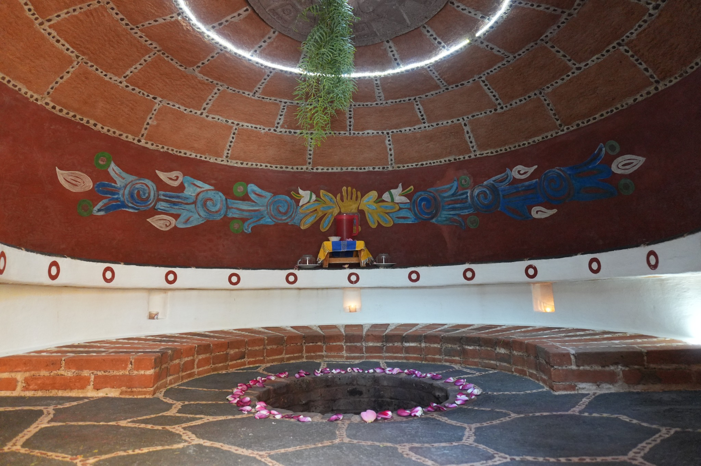
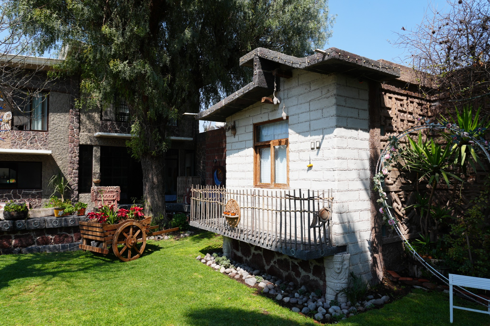
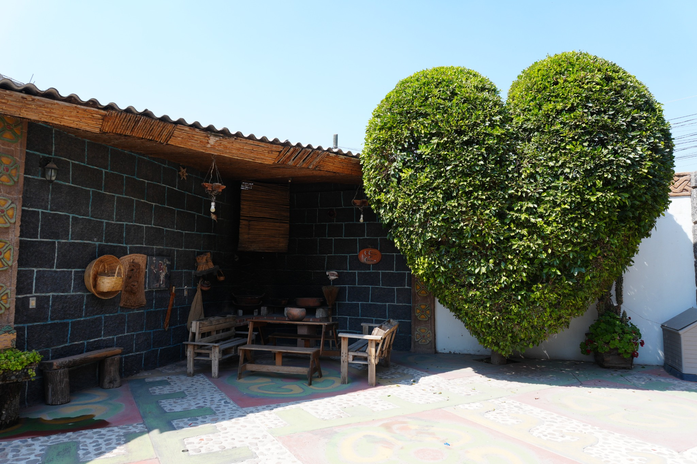

Temazcal boutique • bienestar premium • tradición viva
Un espacio íntimo para volver a ti, respirar profundo y renacer.
En La Casita del Amor, cada experiencia de temazcal combina calidez, belleza natural, conexión espiritual y un entorno mexicano reinterpretado con elegancia contemporánea.

Sobre la experiencia
Más que una sesión, un ritual de bienestar profundamente humano.
El temazcal es una experiencia ancestral de purificación, introspección y renovación. Aquí se vive en un entorno cuidado al detalle: arquitectura cálida, materiales naturales, jardines serenos y una atmósfera pensada para soltar, reconectar y volver al presente.
La intención es ofrecer una vivencia que se sienta especial desde el primer momento: estética armoniosa, energía contenida, pausa real y una conexión auténtica entre cuerpo, mente y espíritu.
Beneficios
Una experiencia diseñada para sentirse profundamente transformadora.
Desconexión mental
Un ritmo más lento, silencio interior y una pausa verdadera frente al ruido cotidiano.
Conexión interior
Un espacio para escuchar al cuerpo, ordenar la mente y volver a lo esencial.
Ritual ancestral
Tradición mexicana reinterpretada con una sensibilidad estética contemporánea y elegante.
Bienestar integral
Una vivencia sensorial que abraza cuerpo, mente, respiración, energía y descanso.
El espacio
Jardines, detalles artesanales y una atmósfera que transforma la llegada.
Cada rincón fue pensado para que la experiencia se sienta cálida, estética y memorable: jardines vivos, texturas de piedra, maderas naturales y elementos que honran la tradición mexicana sin perder sobriedad.
Explorar galería

Galería
Una selección visual para inspirar con armonía editorial y lujo contemporáneo.
Todas las imágenes viven dentro de proporciones consistentes para mantener una experiencia visual limpia y premium en cualquier pantalla.
Testimonios
Palabras que reflejan la atmósfera, la calma y la transformación que se vive aquí.
“Desde que llegas, todo se siente íntimo, cuidado y muy especial. El espacio te baja el ritmo y te invita a estar presente.”
Visitante Experiencia guiada“La mezcla entre naturaleza, diseño y energía del lugar hace que la experiencia sea profundamente renovadora y memorable.”
Reserva especial Momento de reconexión“Se siente auténtico, cálido y elegante. No es solo un temazcal, es una vivencia pensada para desconectar y volver a ti.”
Visitante Bienestar integral